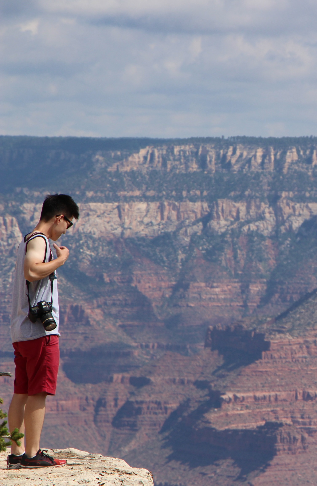

Dating back to 2010 during his second year in high school, Wenyu (Andy) Zhang set foot in the industry of visual effects. After becoming familiar with 2D graphics programs, he taught himself industrial-level 3D packages as well as compositing tools. Photography is also one of his hobbies where he can capture the impressive beauty of landscape and architecture. He graduated fromCommunication University of China with a Bachelor Degree in Digital Media Arts and came to Purdue University to begin his master program. As a visual effect artist, he is always looking forward to creating something elegant and telling an impressive story.